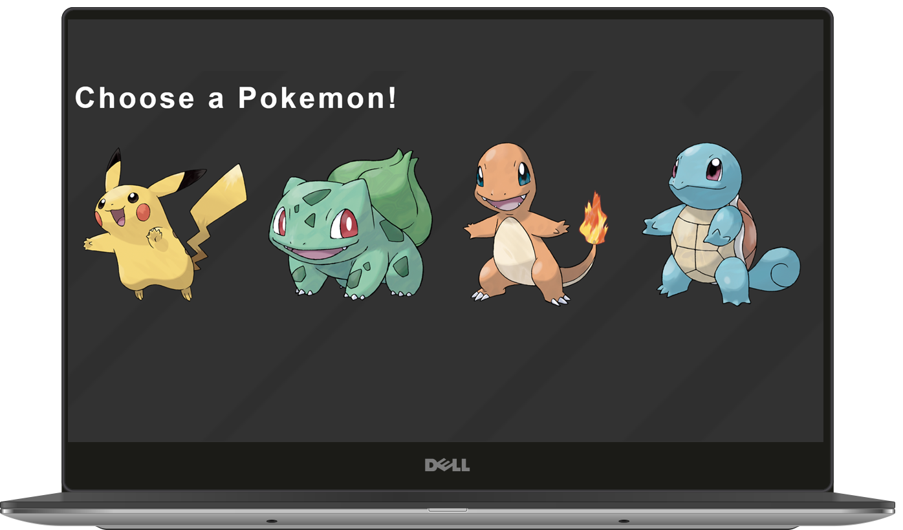
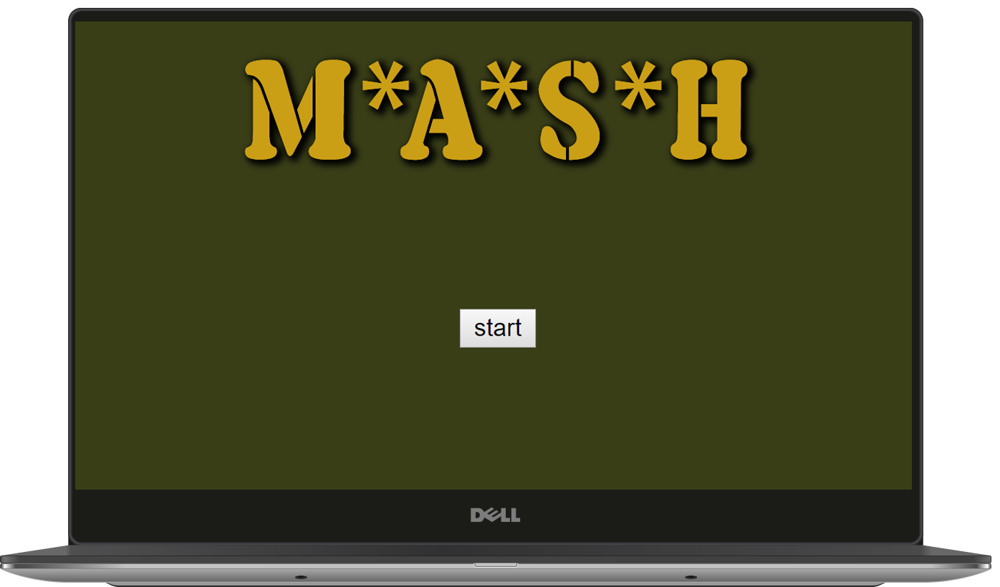
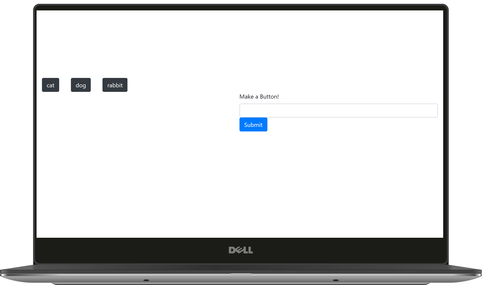
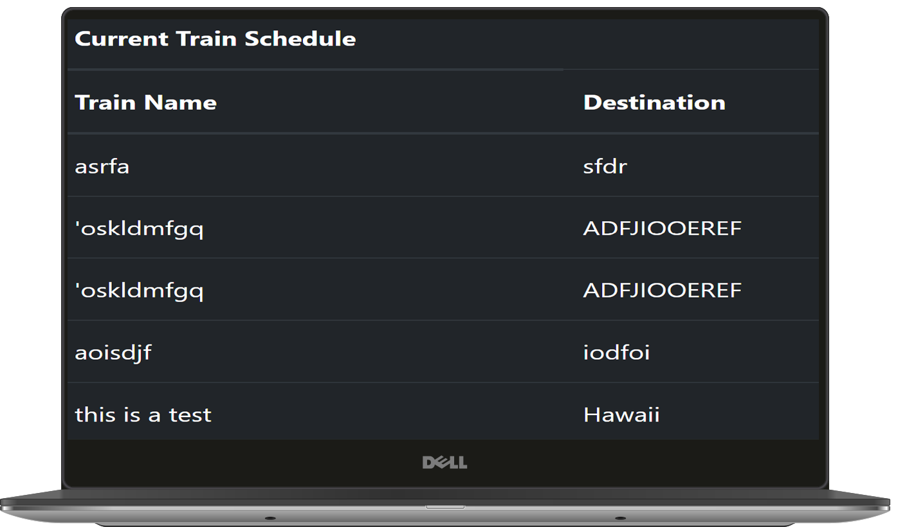

My mission is to continue to learn new technologies while trying to help you create a website that
will take your business, start-up, or idea to the next level.
About Me
Hello world, my name is Lynn Mitchell. I am a 21 year old web designer from Nashville Tennessee. I
am a
recent graduate from the Art Institute of TN - Nashville with a BFA in graphic and web design with
a
focus on
web design.
My Skillset includes HTML, CSS, JavaScript, Materialize, Foundation, Bootstrap, and many programs
in
the Adobe Creative Cloud.
Code Now is a nonprofit that teaches high school kids how to code.
This website was done without any frameworks and shows my use of css-grid and
flexbox

Pokemon RPG
Pokemon RPG shows my use ofJavaScript and
jQuery

M*A*S*H Trivia
M*A*S*H Trivia shows my use ofJavaScript Timers and
jQuery

Giftastic
Giftastic shows my use ofJavaScriptjQuery while using the Gify API

Train Scheduler
Pokemon RPG shows my use ofJavaScript,
jQuery, and Firebase
Contact Me
To contact me about any job positions that are available or if you are in need of a personalized web
site for your business or start up email me at
lynn7mitchell@gmail.com